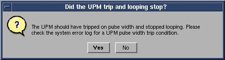
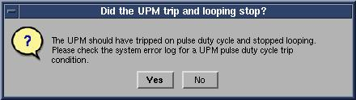

Illustration 5: Body Peak UPM Trip Question

During the tests, the user will be prompted 3 times as each test completes. Look in the error log to confirm that the tests completed successfully. The following illustrations show an example of pop ups and error logs that should be seen.
Illustration 5: Body Peak UPM Trip Question
Illustration 6: Error Log Example

Illustration 7: Pulse Width Trip Question

Illustration 8: Error Log Example Showing Pulse Width Trip

Illustration 9: Pulse Duty Cycle Trip Question

Illustration 10: Error Log Example Showing Pulse Duty Cycle Trip

Illustration 11: Pass Message

| NOTE: | A [TPS Reset] must be performed when testing is complete before scanning can resume. |